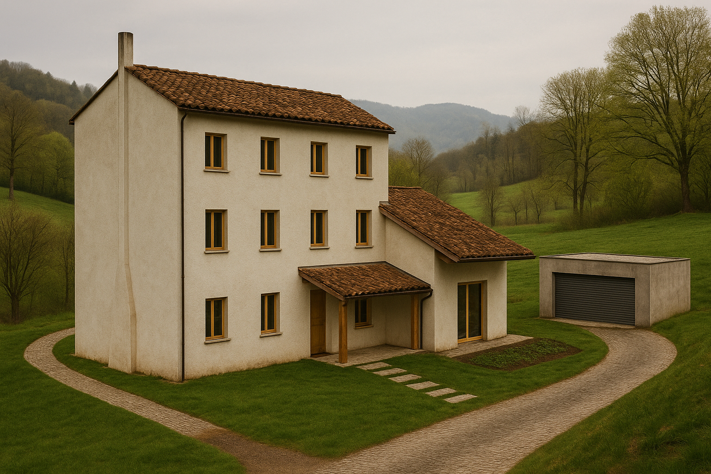
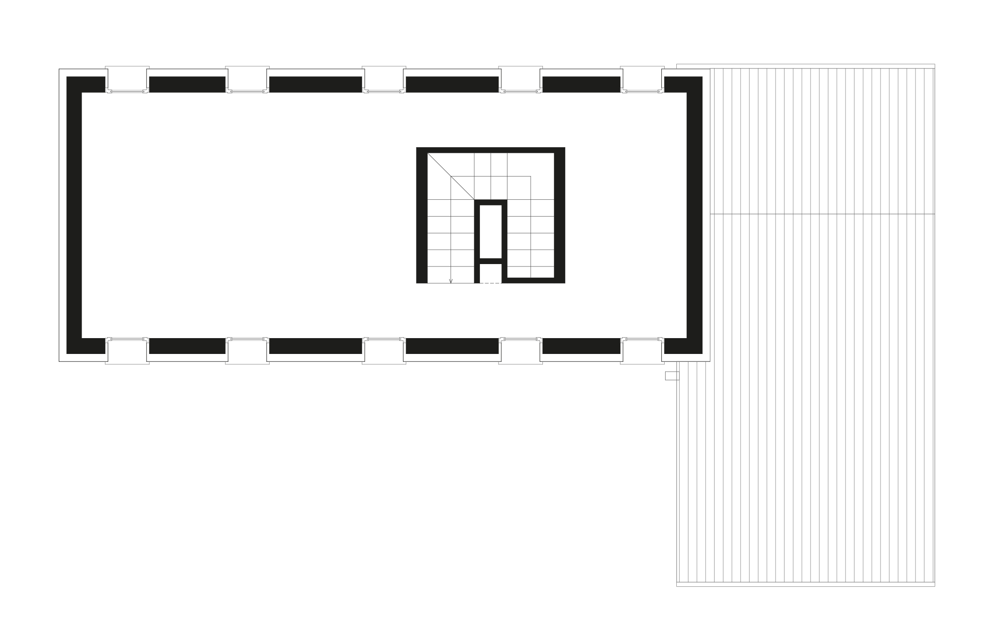

San Polo House
A project developed with Galeotti Rizzato studio, 2016-2017
The building, located in the beautiful countryside of San Polo di Piave, is an old farmhouse dating back to the early 1900s. It follows the typical layout of rural houses of that period, featuring a central staircase and a symmetrical arrangement of rooms, with living spaces on the ground and first floors, and a granary in the attic.
The house had been abandoned for several years, and the complete absence of the roof had severely damaged all the wooden parts of the interior floors, as well as much of the masonry structure.
The restoration project aimed to preserve the original typological and spatial layout. The spaces were thus reorganized in a “symmetrical” manner around a central core housing the staircase and service areas.
A wooden porch was added to the original footprint, providing shelter for a large south-facing glass opening to take full advantage of the countryside view.
In the surrounding outdoor spaces, in addition to new access points and paths, a new volume was introduced to serve as a garage and storage area.



